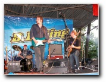
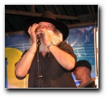
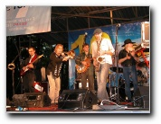
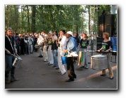
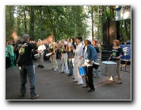
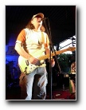
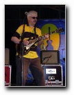
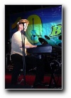
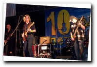

В субботу, 26 июня 2004г., в старом Лефортовском парке, которому так свойственна старомосковская атмосфера, состоялся фестиваль блюза - музыки интернациональной по своему происхождению. Блюз, как музыкальный жанр, родился из сплава национальных культур Европы и Африки и на протяжении всего ХХ столетия продолжал развиваться, породив множество стилей.
В субботу, 26 июня 2004г., в старом Лефортовском парке, которому так свойственна старомосковская атмосфера, состоялся фестиваль блюза - музыки интернациональной по своему происхождению. Блюз, как музыкальный жанр, родился из сплава национальных культур Европы и Африки и на протяжении всего ХХ столетия продолжал развиваться, породив множество стилей.
Добрым поводом к фестивалю стало десятилетие московского дома блюза - клуба "Би Би Кинг". Если вспомнить московский клубный бум десятилетний давности - сколько открывшихся тогда клубов и сегодня сохраняют свою верность изначальным устремлениям? Пожалуй, только один. Именно "Би Би Кинг", пройдя нелегкие для всякого клуба энтузиастов испытания, отстаивает и сегодня свои изначательные - блюзовые - позиции. А фестиваль в Лефортово оказался особенно приятен редкостным сочетанием энтузиазма в музыке и профессионализма в организации.
Собрались все звезды московской блюзовой сцены: от восходящих до признанных корифеев. Играть именно блюз, а не джазовую его разновидность, в России всерьез начали в конце 60-х. И на протяжении очень долгого времени понимание блюза было прочно связано с долгими электрогитарными импровизация и тяжелыми рок-аранжировками. Нынешний фестиваль наглядно продемонстрировал, что с такой односторонностью блюза - покончено. Фестиваль продолжался девять часов кряду, и только стилевое разнообразие помогло ему оставаться интересным и увлекательным музыкальным событием на всем его протяжении.
Джамп-блюз с элементами свинга продемонстрировал артистичный Михаил Мишурис и его оркестр. "Блюз Докторз" играют блюз с техасским напором. Обаятельный патриарх игры на губной гармонике Михаил Петрович Соколов показал старинную блюзовую забаву: как гармоника подражает паровозу на ходу. Признанные лидеры: "Кроссроудз" и "Модерн блюз бэнд" играли с особым подъемом. Николай Арутюнов представил свой относительно новый проект "Фанк-Ю", в котором играет сверхэнергичный вариант современной фанк-музыки. Группа "Офф-бит", ведомая Днисом Мажуковым, виртуозом бугивужного и рокнролльного фортепиано, заставила плясать всю публику. Оксана Кочубей и ее группа "Лайв-н-джой" показали, что блюз и рок-н-ролл можно и сегодня играть так же пламенно, как это делала Дженис Джоплин.
Не мог не запомниться выход группы "Марракату" - большого ансамбля барабанщиков, под предводительством еще одного барабанщика, которому дирижерскую палочку заменяет свисток. В Москве они изучают бразильскую школу игры на ударных инструментах, и получается у них по-бразильски горячо.
Да, в блюз-фестивале принимали участие не только блюзовые коллективы. Специальным гостем был Константин Никольский, один из отцов отечественной рок-музыки. И его принимали очень тепло. Впрочем, в звучании его самой знаменитой группы "Воскресенье" всегда были заметны блюзовые ноты. Никольский приехал за несколько часов до своего выступления, и пребывал в полном восторге от самой атмосферы фестиваля. По его словам: "это был кайф!".
Действительно, чувствовалась особая аура. Потому что публика собралась из единомышленников, понимающая и тонко чувствующая законы этой музыки. Была хорошая музыка с высококлассным звуком под старыми деревьями на свежем воздухе, и продолжалось это от вечернего солнца и до глубокой ночи (пока, по другой старой традиции, милиция не вырубила электричество).
А.Евдокимов
Впервые напечатано в сокращенном варианте в газете "Новые Известия" №112 (1511)
Фотографии:
А.Евдокимов (№№ 1-5)
И.Головачев (№№ 6-9)
 |
| Blues Doctors c В.Демьяновым во главе 700 X 525 137 KB |
 |
| Михаил Петрович Соколов 600 X 537 81 KB |
 |
| Scolders + Bluesmakers 600 X 450 97 KB |
 |
| Марракату 700 X 525 120 KB |
 |
| Марракату 600 X 450 101 KB |
 |
| Гия Дзагнидзе (Modern Blues Band) 375 X 500 61 KB |
 |
| Валерий Гелюта 375 X 500 56 KB |
 |
| Денис Мажуков 341 X 500 53 KB |
 |
| Константин Никольский (слева Игорь Кожин) 628 X 417 67 KB |